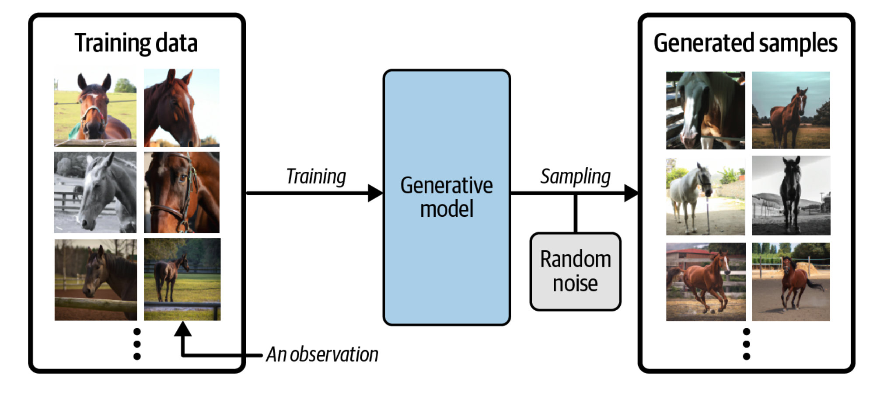
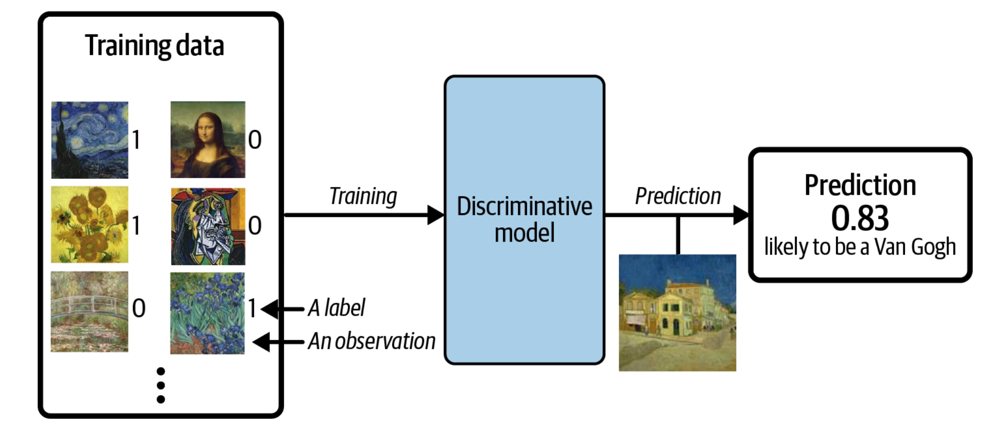

Mathematics of discriminative and generative deep learning, from deep neural networks to diffusion models
STREAMLINE meeting, May 9-10, MSU, 2024
Types of machine learning
The approaches to machine learning are many, but are often split into two main categories. In supervised learning we know the answer to a problem, and let the computer deduce the logic behind it. On the other hand, unsupervised learning is a method for finding patterns and relationship in data sets without any prior knowledge of the system.
An emerging third category is reinforcement learning. This is a paradigm of learning inspired by behavioural psychology, where learning is achieved by trial-and-error, solely from rewards and punishment.
Main categories
Another way to categorize machine learning tasks is to consider the desired output of a system. Some of the most common tasks are:
- Classification: Outputs are divided into two or more classes. The goal is to produce a model that assigns inputs into one of these classes. An example is to identify digits based on pictures of hand-written ones. Classification is typically supervised learning.
- Regression: Finding a functional relationship between an input data set and a reference data set. The goal is to construct a function that maps input data to continuous output values.
- Clustering: Data are divided into groups with certain common traits, without knowing the different groups beforehand. It is thus a form of unsupervised learning.
Machine learning. A simple perspective on the interface between ML and Physics

ML in Nuclear Physics (or any field in physics)

The plethora of machine learning algorithms/methods
- Deep learning: Neural Networks (NN), Convolutional NN, Recurrent NN, Boltzmann machines, autoencoders and variational autoencoders and generative adversarial networks, stable diffusion and many more generative models
- Bayesian statistics and Bayesian Machine Learning, Bayesian experimental design, Bayesian Regression models, Bayesian neural networks, Gaussian processes and much more
- Dimensionality reduction (Principal component analysis), Clustering Methods and more
- Ensemble Methods, Random forests, bagging and voting methods, gradient boosting approaches
- Linear and logistic regression, Kernel methods, support vector machines and more
- Reinforcement Learning; Transfer Learning and more
What Is Generative Modeling?
Generative modeling can be broadly defined as follows:
Generative modeling is a branch of machine learning that involves training a model to produce new data that is similar to a given dataset.
What does this mean in practice? Suppose we have a dataset containing photos of horses. We can train a generative model on this dataset to capture the rules that govern the complex relationships between pixels in images of horses. Then we can sample from this model to create novel, realistic images of horses that did not exist in the original dataset.
Example of generative modeling, taken from Generative Deep Learning by David Foster

Generative Modeling
In order to build a generative model, we require a dataset consisting of many examples of the entity we are trying to generate. This is known as the training data, and one such data point is called an observation.
Each observation consists of many features. For an image generation problem, the features are usually the individual pixel values; for a text generation problem, the features could be individual words or groups of letters. It is our goal to build a model that can generate new sets of features that look as if they have been created using the same rules as the original data. Conceptually, for image generation this is an incredibly difficult task, considering the vast number of ways that individual pixel values can be assigned and the relatively tiny number of such arrangements that constitute an image of the entity we are trying to generate.
Generative Versus Discriminative Modeling
In order to truly understand what generative modeling aims to achieve and why this is important, it is useful to compare it to its counterpart, discriminative modeling. If you have studied machine learning, most problems you will have faced will have most likely been discriminative in nature.
Example of discriminative modeling, taken from Generative Deeep Learning by David Foster

Discriminative Modeling
When performing discriminative modeling, each observation in the training data has a label. For a binary classification problem such as our data could be labeled as ones and zeros. Our model then learns how to discriminate between these two groups and outputs the probability that a new observation has label 1 or 0
In contrast, generative modeling doesn’t require the dataset to be labeled because it concerns itself with generating entirely new data (for example an image), rather than trying to predict a label for say a given image.
Taxonomy of generative deep learning, taken from Generative Deep Learning by David Foster

Good books with hands-on material and codes
All three books have GitHub sites from where one can download all codes. A good and more general text (2016) is Goodfellow, Bengio and Courville, Deep Learning
More references
- A central paper is the one by Sohl-Dickstein et al, Deep Unsupervised Learning using Nonequilibrium Thermodynamics, https://arxiv.org/abs/1503.03585
- See also Diederik P. Kingma, Tim Salimans, Ben Poole, Jonathan Ho, Variational Diffusion Models, https://arxiv.org/abs/2107.00630
- Calvin Luo https://calvinyluo.com/2022/08/26/diffusion-tutorial.html
- An Introduction to Variational Autoencoders, by Kingma and Welling, see https://arxiv.org/abs/1906.02691
What are the basic Machine Learning ingredients?
Almost every problem in ML and data science starts with the same ingredients:
- The dataset \( \boldsymbol{x} \) (could be some observable quantity of the system we are studying)
- A model which is a function of a set of parameters \( \boldsymbol{\alpha} \) that relates to the dataset, say a likelihood function \( p(\boldsymbol{x}\vert \boldsymbol{\alpha}) \) or just a simple model \( f(\boldsymbol{\alpha}) \)
- A so-called loss/cost/risk function \( \mathcal{C} (\boldsymbol{x}, f(\boldsymbol{\alpha})) \) which allows us to decide how well our model represents the dataset.
We seek to minimize the function \( \mathcal{C} (\boldsymbol{x}, f(\boldsymbol{\alpha})) \) by finding the parameter values which minimize \( \mathcal{C} \). This leads to various minimization algorithms. It may surprise many, but at the heart of all machine learning algortihms there is an optimization problem.
Low-level machine learning, the family of ordinary least squares methods
Our data which we want to apply a machine learning method on, consist of a set of inputs \( \boldsymbol{x}^T=[x_0,x_1,x_2,\dots,x_{n-1}] \) and the outputs we want to model \( \boldsymbol{y}^T=[y_0,y_1,y_2,\dots,y_{n-1}] \). We assume that the output data can be represented (for a regression case) by a continuous function \( f \) through
$$ \boldsymbol{y}=f(\boldsymbol{x})+\boldsymbol{\epsilon}. $$Setting up the equations
In linear regression we approximate the unknown function with another continuous function \( \tilde{\boldsymbol{y}}(\boldsymbol{x}) \) which depends linearly on some unknown parameters \( \boldsymbol{\theta}^T=[\theta_0,\theta_1,\theta_2,\dots,\theta_{p-1}] \).
The input data can be organized in terms of a so-called design matrix with an approximating function \( \boldsymbol{\tilde{y}} \)
$$ \boldsymbol{\tilde{y}}= \boldsymbol{X}\boldsymbol{\theta}, $$The objective/cost/loss function
The simplest approach is the mean squared error
$$ C(\boldsymbol{\Theta})=\frac{1}{n}\sum_{i=0}^{n-1}\left(y_i-\tilde{y}_i\right)^2=\frac{1}{n}\left\{\left(\boldsymbol{y}-\boldsymbol{\tilde{y}}\right)^T\left(\boldsymbol{y}-\boldsymbol{\tilde{y}}\right)\right\}, $$or using the matrix \( \boldsymbol{X} \) and in a more compact matrix-vector notation as
$$ C(\boldsymbol{\Theta})=\frac{1}{n}\left\{\left(\boldsymbol{y}-\boldsymbol{X}\boldsymbol{\theta}\right)^T\left(\boldsymbol{y}-\boldsymbol{X}\boldsymbol{\theta}\right)\right\}. $$This function represents one of many possible ways to define the so-called cost function.
Training solution
Optimizing with respect to the unknown parameters \( \theta_j \) we get
$$ \boldsymbol{X}^T\boldsymbol{y} = \boldsymbol{X}^T\boldsymbol{X}\boldsymbol{\theta}, $$and if the matrix \( \boldsymbol{X}^T\boldsymbol{X} \) is invertible we have the optimal values
$$ \hat{\boldsymbol{\theta}} =\left(\boldsymbol{X}^T\boldsymbol{X}\right)^{-1}\boldsymbol{X}^T\boldsymbol{y}. $$We say we 'learn' the unknown parameters \( \boldsymbol{\theta} \) from the last equation.
Ridge and LASSO Regression
Our optimization problem is
$$ {\displaystyle \min_{\boldsymbol{\theta}\in {\mathbb{R}}^{p}}}\frac{1}{n}\left\{\left(\boldsymbol{y}-\boldsymbol{X}\boldsymbol{\theta}\right)^T\left(\boldsymbol{y}-\boldsymbol{X}\boldsymbol{\theta}\right)\right\}. $$or we can state it as
$$ {\displaystyle \min_{\boldsymbol{\theta}\in {\mathbb{R}}^{p}}}\frac{1}{n}\sum_{i=0}^{n-1}\left(y_i-\tilde{y}_i\right)^2=\frac{1}{n}\vert\vert \boldsymbol{y}-\boldsymbol{X}\boldsymbol{\theta}\vert\vert_2^2, $$where we have used the definition of a norm-2 vector, that is
$$ \vert\vert \boldsymbol{x}\vert\vert_2 = \sqrt{\sum_i x_i^2}. $$From OLS to Ridge and Lasso
By minimizing the above equation with respect to the parameters \( \boldsymbol{\theta} \) we could then obtain an analytical expression for the parameters \( \boldsymbol{\theta} \). We can add a regularization parameter \( \lambda \) by defining a new cost function to be optimized, that is
$$ {\displaystyle \min_{\boldsymbol{\theta}\in {\mathbb{R}}^{p}}}\frac{1}{n}\vert\vert \boldsymbol{y}-\boldsymbol{X}\boldsymbol{\theta}\vert\vert_2^2+\lambda\vert\vert \boldsymbol{\theta}\vert\vert_2^2 $$which leads to the Ridge regression minimization problem where we require that \( \vert\vert \boldsymbol{\theta}\vert\vert_2^2\le t \), where \( t \) is a finite number larger than zero. We do not include such a constraints in the discussions here.
Lasso regression
Defining
$$ C(\boldsymbol{X},\boldsymbol{\theta})=\frac{1}{n}\vert\vert \boldsymbol{y}-\boldsymbol{X}\boldsymbol{\theta}\vert\vert_2^2+\lambda\vert\vert \boldsymbol{\theta}\vert\vert_1, $$we have a new optimization equation
$$ {\displaystyle \min_{\boldsymbol{\theta}\in {\mathbb{R}}^{p}}}\frac{1}{n}\vert\vert \boldsymbol{y}-\boldsymbol{X}\boldsymbol{\theta}\vert\vert_2^2+\lambda\vert\vert \boldsymbol{\theta}\vert\vert_1 $$which leads to Lasso regression. Lasso stands for least absolute shrinkage and selection operator. Here we have defined the norm-1 as
$$ \vert\vert \boldsymbol{x}\vert\vert_1 = \sum_i \vert x_i\vert. $$Selected references
- Mehta et al. and Physics Reports (2019).
- Machine Learning and the Physical Sciences by Carleo et al
- Artificial Intelligence and Machine Learning in Nuclear Physics, Amber Boehnlein et al., Reviews Modern of Physics 94, 031003 (2022)
- Dilute neutron star matter from neural-network quantum states by Fore et al, Physical Review Research 5, 033062 (2023)
- Neural-network quantum states for ultra-cold Fermi gases, Jane Kim et al, Nature Physics Communcication, in press, see https://doi.org/10.48550/arXiv.2305.08831
- Message-Passing Neural Quantum States for the Homogeneous Electron Gas, Gabriel Pescia, Jane Kim et al. arXiv.2305.07240,
- Particle Data Group summary on ML methods
Setting up the basic equations for neural networks
Neural networks, in its so-called feed-forward form, where each iterations contains a feed-forward stage and a back-propgagation stage, consist of series of affine matrix-matrix and matrix-vector multiplications. The unknown parameters (the so-called biases and weights which deternine the architecture of a neural network), are uptaded iteratively using the so-called back-propagation algorithm. This algorithm corresponds to the so-called reverse mode of the automatic differentation algorithm. These algorithms will be discussed in more detail below.
We start however first with the definitions of the various variables which make up a neural network.
Overarching view of a neural network
The architecture of a neural network defines our model. This model aims at describing some function \( f(\boldsymbol{x} \) which aims at describing some final result (outputs or tagrget values) given a specific inpput \( \boldsymbol{x} \). Note that here \( \boldsymbol{y} \) and \( \boldsymbol{x} \) are not limited to be vectors.
The architecture consists of
- An input and an output layer where the input layer is defined by the inputs \( \boldsymbol{x} \). The output layer produces the model ouput \( \boldsymbol{\tilde{y}} \) which is compared with the target value \( \boldsymbol{y} \)
- A given number of hidden layers and neurons/nodes/units for each layer (this may vary)
- A given activation function \( \sigma(\boldsymbol{z}) \) with arguments \( \boldsymbol{z} \) to be defined below. The activation functions may differ from layer to layer.
- The last layer, normally called output layer has normally an activation function tailored to the specific problem
- Finally we define a so-called cost or loss function which is used to gauge the quality of our model.
Illustration of a single perceptron model and a multilayer FFNN
Figure 1: In a) we show a single perceptron model while in b) we dispay a network with two hidden layers, an input layer and an output layer.

The optimization problem
The cost function is a function of the unknown parameters \( \boldsymbol{\Theta} \) where the latter is a container for all possible parameters needed to define a neural network
If we are dealing with a regression task a typical cost/loss function is the mean squared error
$$ C(\boldsymbol{\Theta})=\frac{1}{n}\left\{\left(\boldsymbol{y}-\boldsymbol{X}\boldsymbol{\theta}\right)^T\left(\boldsymbol{y}-\boldsymbol{X}\boldsymbol{\theta}\right)\right\}. $$This function represents one of many possible ways to define the so-called cost function.
Weights and biases
For neural networks the parameters \( \boldsymbol{\Theta} \) are given by the so-called weights and biases (to be defined below).
The weights are given by matrix elements \( w_{ij}^{(l)} \) where the superscript indicates the layer number. The biases are typically given by vector elements representing each single node of a given layer, that is \( b_j^{(l)} \).
Other ingredients of a neural network
Having defined the architecture of a neural network, the optimization of the cost function with respect to the parameters \( \boldsymbol{\Theta} \), involves the calculations of gradients and their optimization. The gradients represent the derivatives of a multidimensional object and are often approximated by various gradient methods, including
- various quasi-Newton methods,
- plain gradient descent (GD) with a constant learning rate \( \eta \),
- GD with momentum and other approximations to the learning rates such as
- Adapative gradient (ADAgrad)
- Root mean-square propagation (RMSprop)
- Adaptive gradient with momentum (ADAM) and many other
- Stochastic gradient descent and various families of learning rate approximations
Other parameters
In addition to the above, there are often additional hyperparamaters which are included in the setup of a neural network. These will be discussed below.
Why Feed Forward Neural Networks (FFNN)?
According to the Universal approximation theorem, a feed-forward neural network with just a single hidden layer containing a finite number of neurons can approximate a continuous multidimensional function to arbitrary accuracy, assuming the activation function for the hidden layer is a non-constant, bounded and monotonically-increasing continuous function.
Universal approximation theorem
The universal approximation theorem plays a central role in deep learning. Cybenko (1989) showed the following:
Let \( \sigma \) be any continuous sigmoidal function such that
$$ \sigma(z) = \left\{\begin{array}{cc} 1 & z\rightarrow \infty\\ 0 & z \rightarrow -\infty \end{array}\right. $$Given a continuous and deterministic function \( F(\boldsymbol{x}) \) on the unit cube in \( d \)-dimensions \( F\in [0,1]^d \), \( x\in [0,1]^d \) and a parameter \( \epsilon >0 \), there is a one-layer (hidden) neural network \( f(\boldsymbol{x};\boldsymbol{\Theta}) \) with \( \boldsymbol{\Theta}=(\boldsymbol{W},\boldsymbol{b}) \) and \( \boldsymbol{W}\in \mathbb{R}^{m\times n} \) and \( \boldsymbol{b}\in \mathbb{R}^{n} \), for which
$$ \vert F(\boldsymbol{x})-f(\boldsymbol{x};\boldsymbol{\Theta})\vert < \epsilon \hspace{0.1cm} \forall \boldsymbol{x}\in[0,1]^d. $$The approximation theorem in words
Any continuous function \( y=F(\boldsymbol{x}) \) supported on the unit cube in \( d \)-dimensions can be approximated by a one-layer sigmoidal network to arbitrary accuracy.
Hornik (1991) extended the theorem by letting any non-constant, bounded activation function to be included using that the expectation value
$$ \mathbb{E}[\vert F(\boldsymbol{x})\vert^2] =\int_{\boldsymbol{x}\in D} \vert F(\boldsymbol{x})\vert^2p(\boldsymbol{x})d\boldsymbol{x} < \infty. $$Then we have
$$ \mathbb{E}[\vert F(\boldsymbol{x})-f(\boldsymbol{x};\boldsymbol{\Theta})\vert^2] =\int_{\boldsymbol{x}\in D} \vert F(\boldsymbol{x})-f(\boldsymbol{x};\boldsymbol{\Theta})\vert^2p(\boldsymbol{x})d\boldsymbol{x} < \epsilon. $$More on the general approximation theorem
None of the proofs give any insight into the relation between the number of of hidden layers and nodes and the approximation error \( \epsilon \), nor the magnitudes of \( \boldsymbol{W} \) and \( \boldsymbol{b} \).
Neural networks (NNs) have what we may call a kind of universality no matter what function we want to compute.
It does not mean that an NN can be used to exactly compute any function. Rather, we get an approximation that is as good as we want.
Class of functions we can approximate
The class of functions that can be approximated are the continuous ones. If the function \( F(\boldsymbol{x}) \) is discontinuous, it won't in general be possible to approximate it. However, an NN may still give an approximation even if we fail in some points.
Simple example, fitting nuclear masses
See example at https://github.com/CompPhysics/MachineLearning/blob/master/doc/pub/week34/ipynb/week34.ipynb, and scroll down to nuclear masses.
And the recent article https://www.sciencedirect.com/science/article/pii/S0375947423001100
First network example, simple percepetron with one input
As yet another example we define now a simple perceptron model with all quantities given by scalars. We consider only one input variable \( x \) and one target value \( y \). We define an activation function \( \sigma_1 \) which takes as input
$$ z_1 = w_1x+b_1, $$where \( w_1 \) is the weight and \( b_1 \) is the bias. These are the parameters we want to optimize. The output is \( a_1=\sigma(z_1) \) (see graph from whiteboard notes). This output is then fed into the cost/loss function, which we here for the sake of simplicity just define as the squared error
$$ C(x;w_1,b_1)=\frac{1}{2}(a_1-y)^2. $$Optimizing the parameters
In setting up the feed forward and back propagation parts of the algorithm, we need now the derivative of the various variables we want to train.
We need
$$ \frac{\partial C}{\partial w_1} \hspace{0.1cm}\mathrm{and}\hspace{0.1cm}\frac{\partial C}{\partial b_1}. $$Using the chain rule we find
$$ \frac{\partial C}{\partial w_1}=\frac{\partial C}{\partial a_1}\frac{\partial a_1}{\partial z_1}\frac{\partial z_1}{\partial w_1}=(a_1-y)\sigma_1'x, $$and
$$ \frac{\partial C}{\partial b_1}=\frac{\partial C}{\partial a_1}\frac{\partial a_1}{\partial z_1}\frac{\partial z_1}{\partial b_1}=(a_1-y)\sigma_1', $$which we later will just define as
$$ \frac{\partial C}{\partial a_1}\frac{\partial a_1}{\partial z_1}=\delta_1. $$Implementing the simple perceptron model
In the example code here we implement the above equations (with explict expressions for the derivatives) with just one input variable \( x \) and one output variable. The target value \( y=2x+1 \) is a simple linear function in \( x \). Since this is a regression problem, we define the cost function to be proportional to the least squares error
$$ C(y,w_1,b_1)=\frac{1}{2}(a_1-y)^2, $$with \( a_1 \) the output from the network.
# import necessary packages
import numpy as np
import matplotlib.pyplot as plt
def feed_forward(x):
# weighted sum of inputs to the output layer
z_1 = x*output_weights + output_bias
# Output from output node (one node only)
# Here the output is equal to the input
a_1 = z_1
return a_1
def backpropagation(x, y):
a_1 = feed_forward(x)
# derivative of cost function
derivative_cost = a_1 - y
# the variable delta in the equations, note that output a_1 = z_1, its derivatives wrt z_o is thus 1
delta_1 = derivative_cost
# gradients for the output layer
output_weights_gradient = delta_1*x
output_bias_gradient = delta_1
# The cost function is 0.5*(a_1-y)^2. This gives a measure of the error for each iteration
return output_weights_gradient, output_bias_gradient
# ensure the same random numbers appear every time
np.random.seed(0)
# Input variable
x = 4.0
# Target values
y = 2*x+1.0
# Defining the neural network
n_inputs = 1
n_outputs = 1
# Initialize the network
# weights and bias in the output layer
output_weights = np.random.randn()
output_bias = np.random.randn()
# implementing a simple gradient descent approach with fixed learning rate
eta = 0.01
for i in range(40):
# calculate gradients from back propagation
derivative_w1, derivative_b1 = backpropagation(x, y)
# update weights and biases
output_weights -= eta * derivative_w1
output_bias -= eta * derivative_b1
# our final prediction after training
ytilde = output_weights*x+output_bias
print(0.5*((ytilde-y)**2))
Running this code gives us an acceptable results after some 40-50 iterations. Note that the results depend on the value of the learning rate.
Exercise 1: Extensions to the above code
Feel free to add more input nodes and weights to the above code. Furthermore, try to increase the amount of input and target/output data. Try also to perform calculations for more values of the learning rates. Feel free to add either hyperparameters with an \( l_1 \) norm or an \( l_2 \) norm and discuss your results.
You could also try to change the function \( f(x)=y \) from a linear polynomial in \( x \) to a higher-order polynomial. Comment your results.
Hint: Increasing the number of input variables and input nodes requires a rewrite of the input data in terms of a matrix. You need to figure out the correct dimensionalities.
Adding a hidden layer
We change our simple model to (see graph below) a network with just one hidden layer but with scalar variables only.
Our output variable changes to \( a_2 \) and \( a_1 \) is now the output from the hidden node and \( a_0=x \). We have then
$$ z_1 = w_1a_0+b_1 \hspace{0.1cm} \wedge a_1 = \sigma_1(z_1), $$ $$ z_2 = w_2a_1+b_2 \hspace{0.1cm} \wedge a_2 = \sigma_2(z_2), $$and the cost function
$$ C(x;\boldsymbol{\Theta})=\frac{1}{2}(a_2-y)^2, $$with \( \boldsymbol{\Theta}=[w_1,w_2,b_1,b_2] \).
The derivatives
The derivatives are now, using the chain rule again
$$ \frac{\partial C}{\partial w_2}=\frac{\partial C}{\partial a_2}\frac{\partial a_2}{\partial z_2}\frac{\partial z_2}{\partial w_2}=(a_2-y)\sigma_2'a_1=\delta_2a_1, $$ $$ \frac{\partial C}{\partial b_2}=\frac{\partial C}{\partial a_2}\frac{\partial a_2}{\partial z_2}\frac{\partial z_2}{\partial b_2}=(a_2-y)\sigma_2'=\delta_2, $$ $$ \frac{\partial C}{\partial w_1}=\frac{\partial C}{\partial a_2}\frac{\partial a_2}{\partial z_2}\frac{\partial z_2}{\partial a_1}\frac{\partial a_1}{\partial z_1}\frac{\partial z_1}{\partial w_1}=(a_2-y)\sigma_2'a_1\sigma_1'a_0, $$ $$ \frac{\partial C}{\partial b_1}=\frac{\partial C}{\partial a_2}\frac{\partial a_2}{\partial z_2}\frac{\partial z_2}{\partial a_1}\frac{\partial a_1}{\partial z_1}\frac{\partial z_1}{\partial b_1}=(a_2-y)\sigma_2'\sigma_1'=\delta_1. $$Can you generalize this to more than one hidden layer?
Important observations
From the above equations we see that the derivatives of the activation functions play a central role. If they vanish, the training may stop. This is called the vanishing gradient problem, see discussions below. If they become large, the parameters \( w_i \) and \( b_i \) may simply go to infinity. This is referenced as the exploding gradient problem.
The training
The training of the parameters is done through various gradient descent approximations with
$$ w_{i}\leftarrow w_{i}- \eta \delta_i a_{i-1}, $$and
$$ b_i \leftarrow b_i-\eta \delta_i, $$with \( \eta \) is the learning rate.
One iteration consists of one feed forward step and one back-propagation step. Each back-propagation step does one update of the parameters \( \boldsymbol{\Theta} \).
For the first hidden layer \( a_{i-1}=a_0=x \) for this simple model.
Code example
The code here implements the above model with one hidden layer and scalar variables for the same function we studied in the previous example. The code is however set up so that we can add multiple inputs \( x \) and target values \( y \). Note also that we have the possibility of defining a feature matrix \( \boldsymbol{X} \) with more than just one column for the input values. This will turn useful in our next example. We have also defined matrices and vectors for all of our operations although it is not necessary here.
import numpy as np
# We use the Sigmoid function as activation function
def sigmoid(z):
return 1.0/(1.0+np.exp(-z))
def forwardpropagation(x):
# weighted sum of inputs to the hidden layer
z_1 = np.matmul(x, w_1) + b_1
# activation in the hidden layer
a_1 = sigmoid(z_1)
# weighted sum of inputs to the output layer
z_2 = np.matmul(a_1, w_2) + b_2
a_2 = z_2
return a_1, a_2
def backpropagation(x, y):
a_1, a_2 = forwardpropagation(x)
# parameter delta for the output layer, note that a_2=z_2 and its derivative wrt z_2 is just 1
delta_2 = a_2 - y
print(0.5*((a_2-y)**2))
# delta for the hidden layer
delta_1 = np.matmul(delta_2, w_2.T) * a_1 * (1 - a_1)
# gradients for the output layer
output_weights_gradient = np.matmul(a_1.T, delta_2)
output_bias_gradient = np.sum(delta_2, axis=0)
# gradient for the hidden layer
hidden_weights_gradient = np.matmul(x.T, delta_1)
hidden_bias_gradient = np.sum(delta_1, axis=0)
return output_weights_gradient, output_bias_gradient, hidden_weights_gradient, hidden_bias_gradient
# ensure the same random numbers appear every time
np.random.seed(0)
# Input variable
x = np.array([4.0],dtype=np.float64)
# Target values
y = 2*x+1.0
# Defining the neural network, only scalars here
n_inputs = x.shape
n_features = 1
n_hidden_neurons = 1
n_outputs = 1
# Initialize the network
# weights and bias in the hidden layer
w_1 = np.random.randn(n_features, n_hidden_neurons)
b_1 = np.zeros(n_hidden_neurons) + 0.01
# weights and bias in the output layer
w_2 = np.random.randn(n_hidden_neurons, n_outputs)
b_2 = np.zeros(n_outputs) + 0.01
eta = 0.1
for i in range(50):
# calculate gradients
derivW2, derivB2, derivW1, derivB1 = backpropagation(x, y)
# update weights and biases
w_2 -= eta * derivW2
b_2 -= eta * derivB2
w_1 -= eta * derivW1
b_1 -= eta * derivB1
We see that after some few iterations (the results do depend on the learning rate however), we get an error which is rather small.
Exercise 2: Including more data
Try to increase the amount of input and target/output data. Try also to perform calculations for more values of the learning rates. Feel free to add either hyperparameters with an \( l_1 \) norm or an \( l_2 \) norm and discuss your results. Discuss your results as functions of the amount of training data and various learning rates.
Challenge: Try to change the activation functions and replace the hard-coded analytical expressions with automatic derivation via either autograd or JAX.
Simple neural network and the back propagation equations
Let us now try to increase our level of ambition and attempt at setting up the equations for a neural network with two input nodes, one hidden layer with two hidden nodes and one output layer with one output node/neuron only (see graph)..
We need to define the following parameters and variables with the input layer (layer \( (0) \)) where we label the nodes \( x_0 \) and \( x_1 \)
$$ x_0 = a_0^{(0)} \wedge x_1 = a_1^{(0)}. $$The hidden layer (layer \( (1) \)) has nodes which yield the outputs \( a_0^{(1)} \) and \( a_1^{(1)} \)) with weight \( \boldsymbol{w} \) and bias \( \boldsymbol{b} \) parameters
$$ w_{ij}^{(1)}=\left\{w_{00}^{(1)},w_{01}^{(1)},w_{10}^{(1)},w_{11}^{(1)}\right\} \wedge b^{(1)}=\left\{b_0^{(1)},b_1^{(1)}\right\}. $$The ouput layer
Finally, we have the ouput layer given by layer label \( (2) \) with output \( a^{(2)} \) and weights and biases to be determined given by the variables
$$ w_{i}^{(2)}=\left\{w_{0}^{(2)},w_{1}^{(2)}\right\} \wedge b^{(2)}. $$Our output is \( \tilde{y}=a^{(2)} \) and we define a generic cost function \( C(a^{(2)},y;\boldsymbol{\Theta}) \) where \( y \) is the target value (a scalar here). The parameters we need to optimize are given by
$$ \boldsymbol{\Theta}=\left\{w_{00}^{(1)},w_{01}^{(1)},w_{10}^{(1)},w_{11}^{(1)},w_{0}^{(2)},w_{1}^{(2)},b_0^{(1)},b_1^{(1)},b^{(2)}\right\}. $$Compact expressions
We can define the inputs to the activation functions for the various layers in terms of various matrix-vector multiplications and vector additions. The inputs to the first hidden layer are
$$ \begin{bmatrix}z_0^{(1)} \\ z_1^{(1)} \end{bmatrix}=\begin{bmatrix}w_{00}^{(1)} & w_{01}^{(1)}\\ w_{10}^{(1)} &w_{11}^{(1)} \end{bmatrix}\begin{bmatrix}a_0^{(0)} \\ a_1^{(0)} \end{bmatrix}+\begin{bmatrix}b_0^{(1)} \\ b_1^{(1)} \end{bmatrix}, $$with outputs
$$ \begin{bmatrix}a_0^{(1)} \\ a_1^{(1)} \end{bmatrix}=\begin{bmatrix}\sigma^{(1)}(z_0^{(1)}) \\ \sigma^{(1)}(z_1^{(1)}) \end{bmatrix}. $$Output layer
For the final output layer we have the inputs to the final activation function
$$ z^{(2)} = w_{0}^{(2)}a_0^{(1)} +w_{1}^{(2)}a_1^{(1)}+b^{(2)}, $$resulting in the output
$$ a^{(2)}=\sigma^{(2)}(z^{(2)}). $$Explicit derivatives
In total we have nine parameters which we need to train. Using the chain rule (or just the back-propagation algorithm) we can find all derivatives. Since we will use automatic differentiation in reverse mode, we start with the derivatives of the cost function with respect to the parameters of the output layer, namely
$$ \frac{\partial C}{\partial w_{i}^{(2)}}=\frac{\partial C}{\partial a^{(2)}}\frac{\partial a^{(2)}}{\partial z^{(2)}}\frac{\partial z^{(2)}}{\partial w_{i}^{(2)}}=\delta^{(2)}a_i^{(1)}, $$with
$$ \delta^{(2)}=\frac{\partial C}{\partial a^{(2)}}\frac{\partial a^{(2)}}{\partial z^{(2)}} $$and finally
$$ \frac{\partial C}{\partial b^{(2)}}=\frac{\partial C}{\partial a^{(2)}}\frac{\partial a^{(2)}}{\partial z^{(2)}}\frac{\partial z^{(2)}}{\partial b^{(2)}}=\delta^{(2)}. $$Derivatives of the hidden layer
Using the chain rule we have the following expressions for say one of the weight parameters (it is easy to generalize to the other weight parameters)
$$ \frac{\partial C}{\partial w_{00}^{(1)}}=\frac{\partial C}{\partial a^{(2)}}\frac{\partial a^{(2)}}{\partial z^{(2)}} \frac{\partial z^{(2)}}{\partial z_0^{(1)}}\frac{\partial z_0^{(1)}}{\partial w_{00}^{(1)}}= \delta^{(2)}\frac{\partial z^{(2)}}{\partial z_0^{(1)}}\frac{\partial z_0^{(1)}}{\partial w_{00}^{(1)}}, $$which, noting that
$$ z^{(2)} =w_0^{(2)}a_0^{(1)}+w_1^{(2)}a_1^{(1)}+b^{(2)}, $$allows us to rewrite
$$ \frac{\partial z^{(2)}}{\partial z_0^{(1)}}\frac{\partial z_0^{(1)}}{\partial w_{00}^{(1)}}=w_0^{(2)}\frac{\partial a_0^{(1)}}{\partial z_0^{(1)}}a_0^{(1)}. $$Final expression
Defining
$$ \delta_0^{(1)}=w_0^{(2)}\frac{\partial a_0^{(1)}}{\partial z_0^{(1)}}\delta^{(2)}, $$we have
$$ \frac{\partial C}{\partial w_{00}^{(1)}}=\delta_0^{(1)}a_0^{(1)}. $$Similarly, we obtain
$$ \frac{\partial C}{\partial w_{01}^{(1)}}=\delta_0^{(1)}a_1^{(1)}. $$Completing the list
Similarly, we find
$$ \frac{\partial C}{\partial w_{10}^{(1)}}=\delta_1^{(1)}a_0^{(1)}, $$and
$$ \frac{\partial C}{\partial w_{11}^{(1)}}=\delta_1^{(1)}a_1^{(1)}, $$where we have defined
$$ \delta_1^{(1)}=w_1^{(2)}\frac{\partial a_1^{(1)}}{\partial z_1^{(1)}}\delta^{(2)}. $$Final expressions for the biases of the hidden layer
For the sake of completeness, we list the derivatives of the biases, which are
$$ \frac{\partial C}{\partial b_{0}^{(1)}}=\delta_0^{(1)}, $$and
$$ \frac{\partial C}{\partial b_{1}^{(1)}}=\delta_1^{(1)}. $$As we will see below, these expressions can be generalized in a more compact form.
Gradient expressions
For this specific model, with just one output node and two hidden nodes, the gradient descent equations take the following form for output layer
$$ w_{i}^{(2)}\leftarrow w_{i}^{(2)}- \eta \delta^{(2)} a_{i}^{(1)}, $$and
$$ b^{(2)} \leftarrow b^{(2)}-\eta \delta^{(2)}, $$and
$$ w_{ij}^{(1)}\leftarrow w_{ij}^{(1)}- \eta \delta_{i}^{(1)} a_{j}^{(0)}, $$and
$$ b_{i}^{(1)} \leftarrow b_{i}^{(1)}-\eta \delta_{i}^{(1)}, $$where \( \eta \) is the learning rate.
Exercise 3: Extended program
We extend our simple code to a function which depends on two variable \( x_0 \) and \( x_1 \), that is
$$ y=f(x_0,x_1)=x_0^2+3x_0x_1+x_1^2+5. $$We feed our network with \( n=100 \) entries \( x_0 \) and \( x_1 \). We have thus two features represented by these variable and an input matrix/design matrix \( \boldsymbol{X}\in \mathbf{R}^{n\times 2} \)
$$ \boldsymbol{X}=\begin{bmatrix} x_{00} & x_{01} \\ x_{00} & x_{01} \\ x_{10} & x_{11} \\ x_{20} & x_{21} \\ \dots & \dots \\ \dots & \dots \\ x_{n-20} & x_{n-21} \\ x_{n-10} & x_{n-11} \end{bmatrix}. $$Write a code, based on the previous code examples, which takes as input these data and fit the above function. You can extend your code to include automatic differentiation.
With these examples, we are now ready to embark upon the writing of more a general code for neural networks.
Getting serious, the back propagation equations for a neural network
Now it is time to move away from one node in each layer only. Our inputs are also represented either by several inputs.
We have thus
$$ \frac{\partial{\cal C}((\boldsymbol{\Theta}^L)}{\partial w_{jk}^L} = \left(a_j^L - y_j\right)a_j^L(1-a_j^L)a_k^{L-1}, $$Defining
$$ \delta_j^L = a_j^L(1-a_j^L)\left(a_j^L - y_j\right) = \sigma'(z_j^L)\frac{\partial {\cal C}}{\partial (a_j^L)}, $$and using the Hadamard product of two vectors we can write this as
$$ \boldsymbol{\delta}^L = \sigma'(\hat{z}^L)\circ\frac{\partial {\cal C}}{\partial (\boldsymbol{a}^L)}. $$Analyzing the last results
This is an important expression. The second term on the right handside measures how fast the cost function is changing as a function of the $j$th output activation. If, for example, the cost function doesn't depend much on a particular output node \( j \), then \( \delta_j^L \) will be small, which is what we would expect. The first term on the right, measures how fast the activation function \( f \) is changing at a given activation value \( z_j^L \).
More considerations
Notice that everything in the above equations is easily computed. In particular, we compute \( z_j^L \) while computing the behaviour of the network, and it is only a small additional overhead to compute \( \sigma'(z^L_j) \). The exact form of the derivative with respect to the output depends on the form of the cost function. However, provided the cost function is known there should be little trouble in calculating
$$ \frac{\partial {\cal C}}{\partial (a_j^L)} $$With the definition of \( \delta_j^L \) we have a more compact definition of the derivative of the cost function in terms of the weights, namely
$$ \frac{\partial{\cal C}}{\partial w_{jk}^L} = \delta_j^La_k^{L-1}. $$Derivatives in terms of \( z_j^L \)
It is also easy to see that our previous equation can be written as
$$ \delta_j^L =\frac{\partial {\cal C}}{\partial z_j^L}= \frac{\partial {\cal C}}{\partial a_j^L}\frac{\partial a_j^L}{\partial z_j^L}, $$which can also be interpreted as the partial derivative of the cost function with respect to the biases \( b_j^L \), namely
$$ \delta_j^L = \frac{\partial {\cal C}}{\partial b_j^L}\frac{\partial b_j^L}{\partial z_j^L}=\frac{\partial {\cal C}}{\partial b_j^L}, $$That is, the error \( \delta_j^L \) is exactly equal to the rate of change of the cost function as a function of the bias.
Bringing it together
We have now three equations that are essential for the computations of the derivatives of the cost function at the output layer. These equations are needed to start the algorithm and they are
$$ \begin{equation} \frac{\partial{\cal C}(\hat{W^L})}{\partial w_{jk}^L} = \delta_j^La_k^{L-1}, \label{_auto1} \end{equation} $$and
$$ \begin{equation} \delta_j^L = \sigma'(z_j^L)\frac{\partial {\cal C}}{\partial (a_j^L)}, \label{_auto2} \end{equation} $$and
$$ \begin{equation} \delta_j^L = \frac{\partial {\cal C}}{\partial b_j^L}, \label{_auto3} \end{equation} $$Final back propagating equation
We have that (replacing \( L \) with a general layer \( l \))
$$ \delta_j^l =\frac{\partial {\cal C}}{\partial z_j^l}. $$We want to express this in terms of the equations for layer \( l+1 \).
Using the chain rule and summing over all \( k \) entries
We obtain
$$ \delta_j^l =\sum_k \frac{\partial {\cal C}}{\partial z_k^{l+1}}\frac{\partial z_k^{l+1}}{\partial z_j^{l}}=\sum_k \delta_k^{l+1}\frac{\partial z_k^{l+1}}{\partial z_j^{l}}, $$and recalling that
$$ z_j^{l+1} = \sum_{i=1}^{M_{l}}w_{ij}^{l+1}a_i^{l}+b_j^{l+1}, $$with \( M_l \) being the number of nodes in layer \( l \), we obtain
$$ \delta_j^l =\sum_k \delta_k^{l+1}w_{kj}^{l+1}\sigma'(z_j^l), $$This is our final equation.
We are now ready to set up the algorithm for back propagation and learning the weights and biases.
Setting up the back propagation algorithm
The four equations provide us with a way of computing the gradient of the cost function. Let us write this out in the form of an algorithm.
First, we set up the input data \( \hat{x} \) and the activations \( \hat{z}_1 \) of the input layer and compute the activation function and the pertinent outputs \( \hat{a}^1 \).
Secondly, we perform then the feed forward till we reach the output layer and compute all \( \hat{z}_l \) of the input layer and compute the activation function and the pertinent outputs \( \hat{a}^l \) for \( l=1,2,3,\dots,L \).
Notation: The first hidden layer has \( l=1 \) as label and the final output layer has \( l=L \).
Setting up the back propagation algorithm, part 2
Thereafter we compute the ouput error \( \hat{\delta}^L \) by computing all
$$ \delta_j^L = \sigma'(z_j^L)\frac{\partial {\cal C}}{\partial (a_j^L)}. $$Then we compute the back propagate error for each \( l=L-1,L-2,\dots,1 \) as
$$ \delta_j^l = \sum_k \delta_k^{l+1}w_{kj}^{l+1}\sigma'(z_j^l). $$Setting up the Back propagation algorithm, part 3
Finally, we update the weights and the biases using gradient descent for each \( l=L-1,L-2,\dots,1 \) and update the weights and biases according to the rules
$$ w_{jk}^l\leftarrow = w_{jk}^l- \eta \delta_j^la_k^{l-1}, $$ $$ b_j^l \leftarrow b_j^l-\eta \frac{\partial {\cal C}}{\partial b_j^l}=b_j^l-\eta \delta_j^l, $$with \( \eta \) being the learning rate.
Updating the gradients
With the back propagate error for each \( l=L-1,L-2,\dots,1 \) as
$$ \delta_j^l = \sum_k \delta_k^{l+1}w_{kj}^{l+1}sigma'(z_j^l), $$we update the weights and the biases using gradient descent for each \( l=L-1,L-2,\dots,1 \) and update the weights and biases according to the rules
$$ w_{jk}^l\leftarrow = w_{jk}^l- \eta \delta_j^la_k^{l-1}, $$ $$ b_j^l \leftarrow b_j^l-\eta \frac{\partial {\cal C}}{\partial b_j^l}=b_j^l-\eta \delta_j^l, $$Essential elements of generative models
The aim of generative methods is to train a probability distribution \( p \). The methods we will focus on are:
- Energy based models, with the family of Boltzmann distributions as a typical example
- Variational autoencoders, based on our discussions on autoencoders
- Generative adversarial networks (GANs) and
- Diffusion models
Energy models
Last week we defined a domain \( \boldsymbol{X} \) of stochastic variables \( \boldsymbol{X}= \{x_0,x_1, \dots , x_{n-1}\} \) with a pertinent probability distribution
$$ p(\boldsymbol{X})=\prod_{x_i\in \boldsymbol{X}}p(x_i), $$where we have assumed that the random varaibles \( x_i \) are all independent and identically distributed (iid).
We will now assume that we can defined this function in terms of optimization parameters \( \boldsymbol{\Theta} \), which could be the biases and weights of deep network, and a set of hidden variables we also assume to be random variables which also are iid. The domain of these variables is \( \boldsymbol{H}= \{h_0,h_1, \dots , h_{m-1}\} \).
Probability model
We define a probability
$$ p(x_i,h_j;\boldsymbol{\Theta}) = \frac{f(x_i,h_j;\boldsymbol{\Theta})}{Z(\boldsymbol{\Theta})}, $$where \( f(x_i,h_j;\boldsymbol{\Theta}) \) is a function which we assume is larger or equal than zero and obeys all properties required for a probability distribution and \( Z(\boldsymbol{\Theta}) \) is a normalization constant. Inspired by statistical mechanics, we call it often for the partition function. It is defined as (assuming that we have discrete probability distributions)
$$ Z(\boldsymbol{\Theta})=\sum_{x_i\in \boldsymbol{X}}\sum_{h_j\in \boldsymbol{H}} f(x_i,h_j;\boldsymbol{\Theta}). $$Marginal and conditional probabilities
We can in turn define the marginal probabilities
$$ p(x_i;\boldsymbol{\Theta}) = \frac{\sum_{h_j\in \boldsymbol{H}}f(x_i,h_j;\boldsymbol{\Theta})}{Z(\boldsymbol{\Theta})}, $$and
$$ p(h_i;\boldsymbol{\Theta}) = \frac{\sum_{x_i\in \boldsymbol{X}}f(x_i,h_j;\boldsymbol{\Theta})}{Z(\boldsymbol{\Theta})}. $$Change of notation
Note the change to a vector notation. A variable like \( \boldsymbol{x} \) represents now a specific configuration. We can generate an infinity of such configurations. The final partition function is then the sum over all such possible configurations, that is
$$ Z(\boldsymbol{\Theta})=\sum_{x_i\in \boldsymbol{X}}\sum_{h_j\in \boldsymbol{H}} f(x_i,h_j;\boldsymbol{\Theta}), $$changes to
$$ Z(\boldsymbol{\Theta})=\sum_{\boldsymbol{x}}\sum_{\boldsymbol{h}} f(\boldsymbol{x},\boldsymbol{h};\boldsymbol{\Theta}). $$If we have a binary set of variable \( x_i \) and \( h_j \) and \( M \) values of \( x_i \) and \( N \) values of \( h_j \) we have in total \( 2^M \) and \( 2^N \) possible \( \boldsymbol{x} \) and \( \boldsymbol{h} \) configurations, respectively.
We see that even for the modest binary case, we can easily approach a number of configuration which is not possible to deal with.
Optimization problem
At the end, we are not interested in the probabilities of the hidden variables. The probability we thus want to optimize is
$$ p(\boldsymbol{X};\boldsymbol{\Theta})=\prod_{x_i\in \boldsymbol{X}}p(x_i;\boldsymbol{\Theta})=\prod_{x_i\in \boldsymbol{X}}\left(\frac{\sum_{h_j\in \boldsymbol{H}}f(x_i,h_j;\boldsymbol{\Theta})}{Z(\boldsymbol{\Theta})}\right), $$which we rewrite as
$$ p(\boldsymbol{X};\boldsymbol{\Theta})=\frac{1}{Z(\boldsymbol{\Theta})}\prod_{x_i\in \boldsymbol{X}}\left(\sum_{h_j\in \boldsymbol{H}}f(x_i,h_j;\boldsymbol{\Theta})\right). $$Further simplifications
We simplify further by rewriting it as
$$ p(\boldsymbol{X};\boldsymbol{\Theta})=\frac{1}{Z(\boldsymbol{\Theta})}\prod_{x_i\in \boldsymbol{X}}f(x_i;\boldsymbol{\Theta}), $$where we used \( p(x_i;\boldsymbol{\Theta}) = \sum_{h_j\in \boldsymbol{H}}f(x_i,h_j;\boldsymbol{\Theta}) \). The optimization problem is then
$$ {\displaystyle \mathrm{arg} \hspace{0.1cm}\max_{\boldsymbol{\boldsymbol{\Theta}}\in {\mathbb{R}}^{p}}} \hspace{0.1cm}p(\boldsymbol{X};\boldsymbol{\Theta}). $$Optimizing the logarithm instead
Computing the derivatives with respect to the parameters \( \boldsymbol{\Theta} \) is easier (and equivalent) with taking the logarithm of the probability. We will thus optimize
$$ {\displaystyle \mathrm{arg} \hspace{0.1cm}\max_{\boldsymbol{\boldsymbol{\Theta}}\in {\mathbb{R}}^{p}}} \hspace{0.1cm}\log{p(\boldsymbol{X};\boldsymbol{\Theta})}, $$which leads to
$$ \nabla_{\boldsymbol{\Theta}}\log{p(\boldsymbol{X};\boldsymbol{\Theta})}=0. $$Expression for the gradients
This leads to the following equation
$$ \nabla_{\boldsymbol{\Theta}}\log{p(\boldsymbol{X};\boldsymbol{\Theta})}=\nabla_{\boldsymbol{\Theta}}\left(\sum_{x_i\in \boldsymbol{X}}\log{f(x_i;\boldsymbol{\Theta})}\right)-\nabla_{\boldsymbol{\Theta}}\log{Z(\boldsymbol{\Theta})}=0. $$The first term is called the positive phase and we assume that we have a model for the function \( f \) from which we can sample values. Below we will develop an explicit model for this. The second term is called the negative phase and is the one which leads to more difficulties.
The derivative of the partition function
The partition function, defined above as
$$ Z(\boldsymbol{\Theta})=\sum_{x_i\in \boldsymbol{X}}\sum_{h_j\in \boldsymbol{H}} f(x_i,h_j;\boldsymbol{\Theta}), $$is in general the most problematic term. In principle both \( x \) and \( h \) can span large degrees of freedom, if not even infinitely many ones, and computing the partition function itself is often not desirable or even feasible. The above derivative of the partition function can however be written in terms of an expectation value which is in turn evaluated using Monte Carlo sampling and the theory of Markov chains, popularly shortened to MCMC (or just MC$^2$).
Explicit expression for the derivative
We can rewrite
$$ \nabla_{\boldsymbol{\Theta}}\log{Z(\boldsymbol{\Theta})}=\frac{\nabla_{\boldsymbol{\Theta}}Z(\boldsymbol{\Theta})}{Z(\boldsymbol{\Theta})}, $$which reads in more detail
$$ \nabla_{\boldsymbol{\Theta}}\log{Z(\boldsymbol{\Theta})}=\frac{\nabla_{\boldsymbol{\Theta}} \sum_{x_i\in \boldsymbol{X}}f(x_i;\boldsymbol{\Theta}) }{Z(\boldsymbol{\Theta})}. $$We can rewrite the function \( f \) (we have assumed that is larger or equal than zero) as \( f=\exp{\log{f}} \). We can then reqrite the last equation as
$$ \nabla_{\boldsymbol{\Theta}}\log{Z(\boldsymbol{\Theta})}=\frac{ \sum_{x_i\in \boldsymbol{X}} \nabla_{\boldsymbol{\Theta}}\exp{\log{f(x_i;\boldsymbol{\Theta})}} }{Z(\boldsymbol{\Theta})}. $$Final expression
Taking the derivative gives us
$$ \nabla_{\boldsymbol{\Theta}}\log{Z(\boldsymbol{\Theta})}=\frac{ \sum_{x_i\in \boldsymbol{X}}f(x_i;\boldsymbol{\Theta}) \nabla_{\boldsymbol{\Theta}}\log{f(x_i;\boldsymbol{\Theta})} }{Z(\boldsymbol{\Theta})}, $$which is the expectation value of \( \log{f} \)
$$ \nabla_{\boldsymbol{\Theta}}\log{Z(\boldsymbol{\Theta})}=\sum_{x_i\in \boldsymbol{X}}p(x_i;\boldsymbol{\Theta}) \nabla_{\boldsymbol{\Theta}}\log{f(x_i;\boldsymbol{\Theta})}, $$that is
$$ \nabla_{\boldsymbol{\Theta}}\log{Z(\boldsymbol{\Theta})}=\mathbb{E}(\log{f(x_i;\boldsymbol{\Theta})}). $$This quantity is evaluated using Monte Carlo sampling, with Gibbs sampling as the standard sampling rule. Before we discuss the explicit algorithms, we need to remind ourselves about Markov chains and sampling rules like the Metropolis-Hastings algorithm and Gibbs sampling.
Introducing the energy model
As we will see below, a typical Boltzmann machines employs a probability distribution
$$ p(\boldsymbol{x},\boldsymbol{h};\boldsymbol{\Theta}) = \frac{f(\boldsymbol{x},\boldsymbol{h};\boldsymbol{\Theta})}{Z(\boldsymbol{\Theta})}, $$where \( f(\boldsymbol{x},\boldsymbol{h};\boldsymbol{\Theta}) \) is given by a so-called energy model. If we assume that the random variables \( x_i \) and \( h_j \) take binary values only, for example \( x_i,h_j=\{0,1\} \), we have a so-called binary-binary model where
$$ f(\boldsymbol{x},\boldsymbol{h};\boldsymbol{\Theta})=-E(\boldsymbol{x}, \boldsymbol{h};\boldsymbol{\Theta}) = \sum_{x_i\in \boldsymbol{X}} x_i a_i+\sum_{h_j\in \boldsymbol{H}} b_j h_j + \sum_{x_i\in \boldsymbol{X},h_j\in\boldsymbol{H}} x_i w_{ij} h_j, $$where the set of parameters are given by the biases and weights \( \boldsymbol{\Theta}=\{\boldsymbol{a},\boldsymbol{b},\boldsymbol{W}\} \). Note the vector notation instead of \( x_i \) and \( h_j \) for \( f \). The vectors \( \boldsymbol{x} \) and \( \boldsymbol{h} \) represent a specific instance of stochastic variables \( x_i \) and \( h_j \). These arrangements of \( \boldsymbol{x} \) and \( \boldsymbol{h} \) lead to a specific energy configuration.
More compact notation
With the above definition we can write the probability as
$$ p(\boldsymbol{x},\boldsymbol{h};\boldsymbol{\Theta}) = \frac{\exp{(\boldsymbol{a}^T\boldsymbol{x}+\boldsymbol{b}^T\boldsymbol{h}+\boldsymbol{x}^T\boldsymbol{W}\boldsymbol{h})}}{Z(\boldsymbol{\Theta})}, $$where the biases \( \boldsymbol{a} \) and \( \boldsymbol{h} \) and the weights defined by the matrix \( \boldsymbol{W} \) are the parameters we need to optimize.
Anticipating results to be derived
Since the binary-binary energy model is linear in the parameters \( a_i \), \( b_j \) and \( w_{ij} \), it is easy to see that the derivatives with respect to the various optimization parameters yield expressions used in the evaluation of gradients like
$$ \frac{\partial E(\boldsymbol{x}, \boldsymbol{h};\boldsymbol{\Theta})}{\partial w_{ij}}=-x_ih_j, $$and
$$ \frac{\partial E(\boldsymbol{x}, \boldsymbol{h};\boldsymbol{\Theta})}{\partial a_i}=-x_i, $$and
$$ \frac{\partial E(\boldsymbol{x}, \boldsymbol{h};\boldsymbol{\Theta})}{\partial b_j}=-h_j. $$Boltzmann Machines, marginal and conditional probabilities
A generative model can learn to represent and sample from a probability distribution. The core idea is to learn a parametric model of the probability distribution from which the training data was drawn. As an example
- A model for images could learn to draw new examples of cats and dogs, given a training dataset of images of cats and dogs.
- Generate a sample of an ordered or disordered Ising model phase, having been given samples of such phases.
- Model the trial function for Monte Carlo calculations
Generative and discriminative models
Generative and discriminative models use both gradient-descent based learning procedures for minimizing cost functions
However, in energy based models we don't use backpropagation and automatic differentiation for computing gradients, instead we turn to Markov Chain Monte Carlo methods.
A typical deep neural network has several hidden layers. A restricted Boltzmann machine has normally one hidden layer, however several RBMs can be stacked to make up deep Belief Networks, of which they constitute the building blocks.
Basics of the Boltzmann machine
A BM is what we would call an undirected probabilistic graphical model with stochastic continuous or discrete units.
It is interpreted as a stochastic recurrent neural network where the state of each unit(neurons/nodes) depends on the units it is connected to. The weights in the network represent thus the strength of the interaction between various units/nodes.
More about the basics
A standard BM network is divided into a set of observable and visible units \( \boldsymbol{x} \) and a set of unknown hidden units/nodes \( \boldsymbol{h} \).
Additionally there can be bias nodes for the hidden and visible layers. These biases are normally set to \( 1 \).
BMs are stackable, meaning they cwe can train a BM which serves as input to another BM. We can construct deep networks for learning complex PDFs. The layers can be trained one after another, a feature which makes them popular in deep learning
Difficult to train
However, they are often hard to train. This leads to the introduction of so-called restricted BMs, or RBMS. Here we take away all lateral connections between nodes in the visible layer as well as connections between nodes in the hidden layer.
The network layers
- A function \( \boldsymbol{x} \) that represents the visible layer, a vector of \( M \) elements (nodes). This layer represents both what the RBM might be given as training input, and what we want it to be able to reconstruct. This might for example be the pixels of an image, the spin values of the Ising model, or coefficients representing speech.
- The function \( \boldsymbol{h} \) represents the hidden, or latent, layer. A vector of \( N \) elements (nodes). Also called "feature detectors".
Goal of hidden layer
The goal of the hidden layer is to increase the model's expressive power. We encode complex interactions between visible variables by introducing additional, hidden variables that interact with visible degrees of freedom in a simple manner, yet still reproduce the complex correlations between visible degrees in the data once marginalized over (integrated out).
The parameters
The network parameters, to be optimized/learned:
- \( \boldsymbol{a} \) represents the visible bias, a vector of same length \( M \) as \( \boldsymbol{x} \).
- \( \boldsymbol{b} \) represents the hidden bias, a vector of same length \( N \) as \( \boldsymbol{h} \).
- \( \boldsymbol{W} \) represents the interaction weights, a matrix of size \( M\times N \).
Note that we have specified the lengths of \( bm{x} \) and \( \boldsymbol{h} \). These lengths define the number of visible and hidden units, respectively.
Joint distribution
The restricted Boltzmann machine is described by a Boltzmann distribution
$$ \begin{align*} P_{rbm}(\boldsymbol{x},\boldsymbol{h},\boldsymbol{\Theta}) = \frac{1}{Z(\boldsymbol{\Theta})} \exp{-(E(\boldsymbol{x},\boldsymbol{h},\boldsymbol{\Theta}))}, \end{align*} $$where \( Z \) is the normalization constant or partition function discussed earlier and defined as
$$ \begin{align*} Z(\boldsymbol{\Theta}) = \int \int \exp{-E(\boldsymbol{x},\boldsymbol{h},\boldsymbol{\Theta})} d\boldsymbol{x} d\boldsymbol{h}. \end{align*} $$It is common to set the temperature \( T \) to one. It is omitted in the equations above. The energy is thus a dimensionless function.
Network Elements, the energy function
The function \( E(\boldsymbol{x},\boldsymbol{h},\boldsymbol{\Theta}) \) gives the energy of a configuration (pair of vectors) \( (\boldsymbol{x}, \boldsymbol{h}) \). The lower the energy of a configuration, the higher the probability of it. This function also depends on the parameters \( \boldsymbol{a} \), \( \boldsymbol{b} \) and \( W \). Thus, when we adjust them during the learning procedure, we are adjusting the energy function to best fit our problem.
Defining different types of RBMs
There are different variants of RBMs, and the differences lie in the types of visible and hidden units we choose as well as in the implementation of the energy function \( E(\boldsymbol{x},\boldsymbol{h},\boldsymbol{\Theta}) \). The connection between the nodes in the two layers is given by the weights \( w_{ij} \).
RBMs were first developed using binary units in both the visible and hidden layer. The corresponding energy function is defined as follows:
$$ \begin{align*} E(\boldsymbol{x}, \boldsymbol{h},\boldsymbol{\Theta}) = - \sum_i^M x_i a_i- \sum_j^N b_j h_j - \sum_{i,j}^{M,N} x_i w_{ij} h_j, \end{align*} $$where the binary values taken on by the nodes are most commonly 0 and 1.
Gaussian-binary RBM
Another varient is the RBM where the visible units are Gaussian while the hidden units remain binary:
$$ \begin{align*} E(\boldsymbol{x}, \boldsymbol{h},\boldsymbol{\Theta}) = \sum_i^M \frac{(x_i - a_i)^2}{2\sigma_i^2} - \sum_j^N b_j h_j - \sum_{i,j}^{M,N} \frac{x_i w_{ij} h_j}{\sigma_i^2}. \end{align*} $$This type of RBMs are useful when we model continuous data (i.e., we wish \( \boldsymbol{x} \) to be continuous). The paramater \( \sigma_i^2 \) is meant to represent a variance and is foten just set to one.
Code for RBMs using PyTorch
import numpy as np
import torch
import torch.utils.data
import torch.nn as nn
import torch.nn.functional as F
import torch.optim as optim
from torch.autograd import Variable
from torchvision import datasets, transforms
from torchvision.utils import make_grid , save_image
import matplotlib.pyplot as plt
batch_size = 64
train_loader = torch.utils.data.DataLoader(
datasets.MNIST('./data',
train=True,
download = True,
transform = transforms.Compose(
[transforms.ToTensor()])
),
batch_size=batch_size
)
test_loader = torch.utils.data.DataLoader(
datasets.MNIST('./data',
train=False,
transform=transforms.Compose(
[transforms.ToTensor()])
),
batch_size=batch_size)
class RBM(nn.Module):
def __init__(self,
n_vis=784,
n_hin=500,
k=5):
super(RBM, self).__init__()
self.W = nn.Parameter(torch.randn(n_hin,n_vis)*1e-2)
self.v_bias = nn.Parameter(torch.zeros(n_vis))
self.h_bias = nn.Parameter(torch.zeros(n_hin))
self.k = k
def sample_from_p(self,p):
return F.relu(torch.sign(p - Variable(torch.rand(p.size()))))
def v_to_h(self,v):
p_h = F.sigmoid(F.linear(v,self.W,self.h_bias))
sample_h = self.sample_from_p(p_h)
return p_h,sample_h
def h_to_v(self,h):
p_v = F.sigmoid(F.linear(h,self.W.t(),self.v_bias))
sample_v = self.sample_from_p(p_v)
return p_v,sample_v
def forward(self,v):
pre_h1,h1 = self.v_to_h(v)
h_ = h1
for _ in range(self.k):
pre_v_,v_ = self.h_to_v(h_)
pre_h_,h_ = self.v_to_h(v_)
return v,v_
def free_energy(self,v):
vbias_term = v.mv(self.v_bias)
wx_b = F.linear(v,self.W,self.h_bias)
hidden_term = wx_b.exp().add(1).log().sum(1)
return (-hidden_term - vbias_term).mean()
rbm = RBM(k=1)
train_op = optim.SGD(rbm.parameters(),0.1)
for epoch in range(10):
loss_ = []
for _, (data,target) in enumerate(train_loader):
data = Variable(data.view(-1,784))
sample_data = data.bernoulli()
v,v1 = rbm(sample_data)
loss = rbm.free_energy(v) - rbm.free_energy(v1)
loss_.append(loss.data)
train_op.zero_grad()
loss.backward()
train_op.step()
print("Training loss for {} epoch: {}".format(epoch, np.mean(loss_)))
def show_adn_save(file_name,img):
npimg = np.transpose(img.numpy(),(1,2,0))
f = "./%s.png" % file_name
plt.imshow(npimg)
plt.imsave(f,npimg)
show_adn_save("real",make_grid(v.view(32,1,28,28).data))
show_adn_save("generate",make_grid(v1.view(32,1,28,28).data))
Energy-based models and Langevin sampling
See discussions in Foster, chapter 7 on energy-based models at https://github.com/davidADSP/Generative_Deep_Learning_2nd_Edition/tree/main/notebooks/07_ebm/01_ebm
That notebook is based on a recent article by Du and Mordatch, Implicit generation and modeling with energy-based models, see https://arxiv.org/pdf/1903.08689.pdf.
Tensor-flow examples
- To create Boltzmann machine using Keras, see Babcock and Bali chapter 4, see https://github.com/PacktPublishing/Hands-On-Generative-AI-with-Python-and-TensorFlow-2/blob/master/Chapter_4/models/rbm.py
- See also Foster, chapter 7 on energy-based models at https://github.com/davidADSP/Generative_Deep_Learning_2nd_Edition/tree/main/notebooks/07_ebm/01_ebm
Kullback-Leibler divergence
Before we continue, we need to remind ourselves about the Kullback-Leibler divergence introduced earlier. This will also allow us to introduce another measure used in connection with the training of Generative Adversarial Networks, the so-called Jensen-Shannon divergence.. These metrics are useful for quantifying the similarity between two probability distributions.
The Kullback–Leibler (KL) divergence, labeled \( D_{KL} \), measures how one probability distribution \( p \) diverges from a second expected probability distribution \( q \), that is
$$ D_{KL}(p \| q) = \int_x p(x) \log \frac{p(x)}{q(x)} dx. $$The KL-divegrnece \( D_{KL} \) achieves the minimum zero when \( p(x) == q(x) \) everywhere.
Note that the KL divergence is asymmetric. In cases where \( p(x) \) is close to zero, but \( q(x) \) is significantly non-zero, the \( q \)'s effect is disregarded. It could cause buggy results when we just want to measure the similarity between two equally important distributions.
Jensen-Shannon divergence
The Jensen–Shannon (JS) divergence is another measure of similarity between two probability distributions, bounded by \( [0, 1] \). The JS-divergence is symmetric and more smooth than the KL-divergence. It is defined as
$$ D_{JS}(p \| q) = \frac{1}{2} D_{KL}(p \| \frac{p + q}{2}) + \frac{1}{2} D_{KL}(q \| \frac{p + q}{2}) $$Many practitioners believe that one reason behind GANs' big success is switching the loss function from asymmetric KL-divergence in traditional maximum-likelihood approach to symmetric JS-divergence.
Generative model, basic overview (Borrowed from Rashcka et al)
Reminder on VAEs
Mathematically, we can imagine the latent variables and the data we observe as modeled by a joint distribution \( p(\boldsymbol{x}, \boldsymbol{h};\boldsymbol{\Theta}) \). Recall one approach of generative modeling, termed likelihood-based, is to learn a model to maximize the likelihood \( p(\boldsymbol{x};\boldsymbol{\Theta}) \) of all observed \( \boldsymbol{x} \). There are two ways we can manipulate this joint distribution to recover the likelihood of purely our observed data \( p(\boldsymbol{x};\boldsymbol{\Theta}) \); we can explicitly marginalize out the latent variable \( \boldsymbol{h} \)
$$ \begin{equation*} p(\boldsymbol{x}) = \int p(\boldsymbol{x}, \boldsymbol{h})d\boldsymbol{h} \end{equation*} $$or, we could also appeal to the chain rule of probability
$$ \begin{equation*} p(\boldsymbol{x}) = \frac{p(\boldsymbol{x}, \boldsymbol{h})}{p(\boldsymbol{h}|\boldsymbol{x})} \end{equation*} $$We suppress here the dependence on the optimization parameters \( \boldsymbol{\Theta} \).
Evidence Lower Bound
Directly computing and maximizing the likelihood \( p(\boldsymbol{x}) \) is difficult because it either involves integrating out all latent variables \( \boldsymbol{h} \), which is intractable for complex models, or it involves having access to a ground truth latent encoder \( p(\boldsymbol{h}|\boldsymbol{x}) \).
Using the last two equations, we can derive a term called the Evidence Lower Bound (ELBO), which as its name suggests, is a lower bound of the evidence. The evidence is quantified in this case as the log likelihood of the observed data. Then, maximizing the ELBO becomes a proxy objective with which to optimize a latent variable model; in the best case, when the ELBO is powerfully parameterized and perfectly optimized, it becomes exactly equivalent to the evidence.
ELBO equations
Formally, the equation of the ELBO is
$$ \begin{equation*} \mathbb{E}_{q_{\boldsymbol{\phi}}(\boldsymbol{h}|\boldsymbol{x})}\left[\log\frac{p(\boldsymbol{x}, \boldsymbol{h})}{q_{\boldsymbol{\phi}}(\boldsymbol{h}|\boldsymbol{x})}\right] \end{equation*} $$To make the relationship with the evidence explicit, we can mathematically write:
$$ \begin{equation*} \log p(\boldsymbol{x}) \geq \mathbb{E}_{q_{\boldsymbol{\phi}}(\boldsymbol{h}|\boldsymbol{x})}\left[\log\frac{p(\boldsymbol{x}, \boldsymbol{h})}{q_{\boldsymbol{\phi}}(\boldsymbol{h}|\boldsymbol{x})}\right] \end{equation*} $$Introducing the encoder function
Here, \( q_{\boldsymbol{\phi}}(\boldsymbol{h}|\boldsymbol{x}) \) is a flexible approximate variational distribution with parameters \( \boldsymbol{\phi} \) that we seek to optimize. Intuitively, it can be thought of as a parameterizable model that is learned to estimate the true distribution over latent variables for given observations \( \boldsymbol{x} \); in other words, it seeks to approximate true posterior \( p(\boldsymbol{h}|\boldsymbol{x}) \). As we saw last week when we explored Variational Autoencoders, as we increase the lower bound by tuning the parameters \( \boldsymbol{\phi} \) to maximize the ELBO, we gain access to components that can be used to model the true data distribution and sample from it, thus learning a generative model.
ELBO
To better understand the relationship between the evidence and the ELBO, let us perform another derivation, this time using
$$ \begin{align*} \log p(\boldsymbol{x}) & = \log p(\boldsymbol{x}) \int q_{\boldsymbol{\phi}}(\boldsymbol{h}|\boldsymbol{x})d\boldsymbol{h} && \text{(Multiply by $1 = \int q_{\boldsymbol{\phi}}(\boldsymbol{h}|\boldsymbol{x})d\boldsymbol{h}$)}\\ & = \int q_{\boldsymbol{\phi}}(\boldsymbol{h}|\boldsymbol{x})(\log p(\boldsymbol{x}))d\boldsymbol{h} && \text{(Bring evidence into integral)}\\ & = \mathbb{E}_{q_{\boldsymbol{\phi}}(\boldsymbol{h}|\boldsymbol{x})}\left[\log p(\boldsymbol{x})\right] && \text{(Definition of Expectation)}\\ & = \mathbb{E}_{q_{\boldsymbol{\phi}}(\boldsymbol{h}|\boldsymbol{x})}\left[\log\frac{p(\boldsymbol{x}, \boldsymbol{h})}{p(\boldsymbol{h}|\boldsymbol{x})}\right]&& \\ & = \mathbb{E}_{q_{\boldsymbol{\phi}}(\boldsymbol{h}|\boldsymbol{x})}\left[\log\frac{p(\boldsymbol{x}, \boldsymbol{h})q_{\boldsymbol{\phi}}(\boldsymbol{h}|\boldsymbol{x})}{p(\boldsymbol{h}|\boldsymbol{x})q_{\boldsymbol{\phi}}(\boldsymbol{h}|\boldsymbol{x})}\right]&& \text{(Multiply by $1 = \frac{q_{\boldsymbol{\phi}}(\boldsymbol{h}|\boldsymbol{x})}{q_{\boldsymbol{\phi}}(\boldsymbol{h}|\boldsymbol{x})}$)}\\ & = \mathbb{E}_{q_{\boldsymbol{\phi}}(\boldsymbol{h}|\boldsymbol{x})}\left[\log\frac{p(\boldsymbol{x}, \boldsymbol{h})}{q_{\boldsymbol{\phi}}(\boldsymbol{h}|\boldsymbol{x})}\right] + \mathbb{E}_{q_{\boldsymbol{\phi}}(\boldsymbol{h}|\boldsymbol{x})}\left[\log\frac{q_{\boldsymbol{\phi}}(\boldsymbol{h}|\boldsymbol{x})}{p(\boldsymbol{h}|\boldsymbol{x})}\right] && \text{(Split the Expectation)}\\ & = \mathbb{E}_{q_{\boldsymbol{\phi}}(\boldsymbol{h}|\boldsymbol{x})}\left[\log\frac{p(\boldsymbol{x}, \boldsymbol{h})}{q_{\boldsymbol{\phi}}(\boldsymbol{h}|\boldsymbol{x})}\right] + D_{KL}(q_{\boldsymbol{\phi}}(\boldsymbol{h}|\boldsymbol{x})\vert\vert p(\boldsymbol{h}|\boldsymbol{x})) && \text{(Definition of KL Divergence)}\\ & \geq \mathbb{E}_{q_{\boldsymbol{\phi}}(\boldsymbol{h}|\boldsymbol{x})}\left[\log\frac{p(\boldsymbol{x}, \boldsymbol{h})}{q_{\boldsymbol{\phi}}(\boldsymbol{h}|\boldsymbol{x})}\right] && \text{(KL Divergence always $\geq 0$)} \end{align*} $$Analysis
From this derivation, we clearly observe from the last equation that the evidence is equal to the ELBO plus the KL Divergence between the approximate posterior \( q_{\boldsymbol{\phi}}(\boldsymbol{h}|\boldsymbol{x}) \) and the true posterior \( p(\boldsymbol{h}|\boldsymbol{x}) \). Understanding this term is the key to understanding not only the relationship between the ELBO and the evidence, but also the reason why optimizing the ELBO is an appropriate objective at all.
The VAE
In the default formulation of the VAE by Kingma and Welling (2015), we directly maximize the ELBO. This approach is \textit{variational}, because we optimize for the best \( q_{\boldsymbol{\phi}}(\boldsymbol{h}|\boldsymbol{x}) \) amongst a family of potential posterior distributions parameterized by \( \boldsymbol{\phi} \). It is called an \textit{autoencoder} because it is reminiscent of a traditional autoencoder model, where input data is trained to predict itself after undergoing an intermediate bottlenecking representation step.
Dissecting the equations
To make this connection explicit, let us dissect the ELBO term further:
$$ \begin{align*} {\mathbb{E}_{q_{\boldsymbol{\phi}}(\boldsymbol{h}|\boldsymbol{x})}\left[\log\frac{p(\boldsymbol{x}, \boldsymbol{h})}{q_{\boldsymbol{\phi}}(\boldsymbol{h}|\boldsymbol{x})}\right]} &= {\mathbb{E}_{q_{\boldsymbol{\phi}}(\boldsymbol{h}|\boldsymbol{x})}\left[\log\frac{p_{\boldsymbol{\theta}}(\boldsymbol{x}|\boldsymbol{h})p(\boldsymbol{h})}{q_{\boldsymbol{\phi}}(\boldsymbol{h}|\boldsymbol{x})}\right]} && {\text{(Chain Rule of Probability)}}\\ &= {\mathbb{E}_{q_{\boldsymbol{\phi}}(\boldsymbol{h}|\boldsymbol{x})}\left[\log p_{\boldsymbol{\theta}}(\boldsymbol{x}|\boldsymbol{h})\right] + \mathbb{E}_{q_{\boldsymbol{\phi}}(\boldsymbol{h}|\boldsymbol{x})}\left[\log\frac{p(\boldsymbol{h})}{q_{\boldsymbol{\phi}}(\boldsymbol{h}|\boldsymbol{x})}\right]} && {\text{(Split the Expectation)}}\\ &= \underbrace{{\mathbb{E}_{q_{\boldsymbol{\phi}}(\boldsymbol{h}|\boldsymbol{x})}\left[\log p_{\boldsymbol{\theta}}(\boldsymbol{x}|\boldsymbol{h})\right]}}_\text{reconstruction term} - \underbrace{{D_{KL}(q_{\boldsymbol{\phi}}(\boldsymbol{h}|\boldsymbol{x})}\vert\vert{p(\boldsymbol{h}))}}_\text{prior matching term} && {\text{(Definition of KL Divergence)}} \end{align*} $$Bottlenecking distribution
In this case, we learn an intermediate bottlenecking distribution \( q_{\boldsymbol{\phi}}(\boldsymbol{h}|\boldsymbol{x}) \) that can be treated as an \textit{encoder}; it transforms inputs into a distribution over possible latents. Simultaneously, we learn a deterministic function \( p_{\boldsymbol{\theta}}(\boldsymbol{x}|\boldsymbol{h}) \) to convert a given latent vector \( \boldsymbol{h} \) into an observation \( \boldsymbol{x} \), which can be interpreted as a \textit{decoder}.
Decoder and encoder
The two terms in the last equation each have intuitive descriptions: the first term measures the reconstruction likelihood of the decoder from our variational distribution; this ensures that the learned distribution is modeling effective latents that the original data can be regenerated from. The second term measures how similar the learned variational distribution is to a prior belief held over latent variables. Minimizing this term encourages the encoder to actually learn a distribution rather than collapse into a Dirac delta function. Maximizing the ELBO is thus equivalent to maximizing its first term and minimizing its second term.
Defining feature of VAEs
A defining feature of the VAE is how the ELBO is optimized jointly over parameters \( \boldsymbol{\phi} \) and \( \boldsymbol{\theta} \). The encoder of the VAE is commonly chosen to model a multivariate Gaussian with diagonal covariance, and the prior is often selected to be a standard multivariate Gaussian:
$$ \begin{align*} q_{\boldsymbol{\phi}}(\boldsymbol{h}|\boldsymbol{x}) &= N(\boldsymbol{h}; \boldsymbol{\mu}_{\boldsymbol{\phi}}(\boldsymbol{x}), \boldsymbol{\sigma}_{\boldsymbol{\phi}}^2(\boldsymbol{x})\textbf{I})\\ p(\boldsymbol{h}) &= N(\boldsymbol{h}; \boldsymbol{0}, \textbf{I}) \end{align*} $$Analytical evaluation
Then, the KL divergence term of the ELBO can be computed analytically, and the reconstruction term can be approximated using a Monte Carlo estimate. Our objective can then be rewritten as:
$$ \begin{align*} \mathrm{argmax}_{\boldsymbol{\phi}, \boldsymbol{\theta}} \mathbb{E}_{q_{\boldsymbol{\phi}}(\boldsymbol{h}|\boldsymbol{x})}\left[\log p_{\boldsymbol{\theta}}(\boldsymbol{x}|\boldsymbol{h})\right] - D_{KL}(q_{\boldsymbol{\phi}}(\boldsymbol{h}|\boldsymbol{x})\vert\vert p(\boldsymbol{h})) \approx \mathrm{argmax}_{\boldsymbol{\phi}, \boldsymbol{\theta}} \sum_{l=1}^{L}\log p_{\boldsymbol{\theta}}(\boldsymbol{x}|\boldsymbol{h}^{(l)}) - D_{KL}(q_{\boldsymbol{\phi}}(\boldsymbol{h}|\boldsymbol{x})\vert\vert p(\boldsymbol{h})) \end{align*} $$where latents \( \{\boldsymbol{h}^{(l)}\}_{l=1}^L \) are sampled from \( q_{\boldsymbol{\phi}}(\boldsymbol{h}|\boldsymbol{x}) \), for every observation \( \boldsymbol{x} \) in the dataset.
Reparameterization trick
However, a problem arises in this default setup: each \( \boldsymbol{h}^{(l)} \) that our loss is computed on is generated by a stochastic sampling procedure, which is generally non-differentiable. Fortunately, this can be addressed via the \textit{reparameterization trick} when \( q_{\boldsymbol{\phi}}(\boldsymbol{h}|\boldsymbol{x}) \) is designed to model certain distributions, including the multivariate Gaussian.
Actual implementation
The reparameterization trick rewrites a random variable as a deterministic function of a noise variable; this allows for the optimization of the non-stochastic terms through gradient descent. For example, samples from a normal distribution \( x \sim N(x;\mu, \sigma^2) \) with arbitrary mean \( \mu \) and variance \( \sigma^2 \) can be rewritten as
$$ \begin{align*} x &= \mu + \sigma\epsilon \quad \text{with } \epsilon \sim N(\epsilon; 0, \boldsymbol{I}) \end{align*} $$Interpretation
An arbitrary Gaussian distributions can be interpreted as standard Gaussians (of which \( \epsilon \) is a sample) that have their mean shifted from zero to the target mean \( \mu \) by addition, and their variance stretched by the target variance \( \sigma^2 \). Therefore, by the reparameterization trick, sampling from an arbitrary Gaussian distribution can be performed by sampling from a standard Gaussian, scaling the result by the target standard deviation, and shifting it by the target mean.
Deterministic function
In a VAE, each \( \boldsymbol{h} \) is thus computed as a deterministic function of input \( \boldsymbol{x} \) and auxiliary noise variable \( \boldsymbol{\epsilon} \):
$$ \begin{align*} \boldsymbol{h} &= \boldsymbol{\mu}_{\boldsymbol{\phi}}(\boldsymbol{x}) + \boldsymbol{\sigma}_{\boldsymbol{\phi}}(\boldsymbol{x})\odot\boldsymbol{\epsilon} \quad \text{with } \boldsymbol{\epsilon} \sim N(\boldsymbol{\epsilon};\boldsymbol{0}, \textbf{I}) \end{align*} $$where \( \odot \) represents an element-wise product. Under this reparameterized version of \( \boldsymbol{h} \), gradients can then be computed with respect to \( \boldsymbol{\phi} \) as desired, to optimize \( \boldsymbol{\mu}_{\boldsymbol{\phi}} \) and \( \boldsymbol{\sigma}_{\boldsymbol{\phi}} \). The VAE therefore utilizes the reparameterization trick and Monte Carlo estimates to optimize the ELBO jointly over \( \boldsymbol{\phi} \) and \( \boldsymbol{\theta} \).
After training
After training a VAE, generating new data can be performed by sampling directly from the latent space \( p(\boldsymbol{h}) \) and then running it through the decoder. Variational Autoencoders are particularly interesting when the dimensionality of \( \boldsymbol{h} \) is less than that of input \( \boldsymbol{x} \), as we might then be learning compact, useful representations. Furthermore, when a semantically meaningful latent space is learned, latent vectors can be edited before being passed to the decoder to more precisely control the data generated.